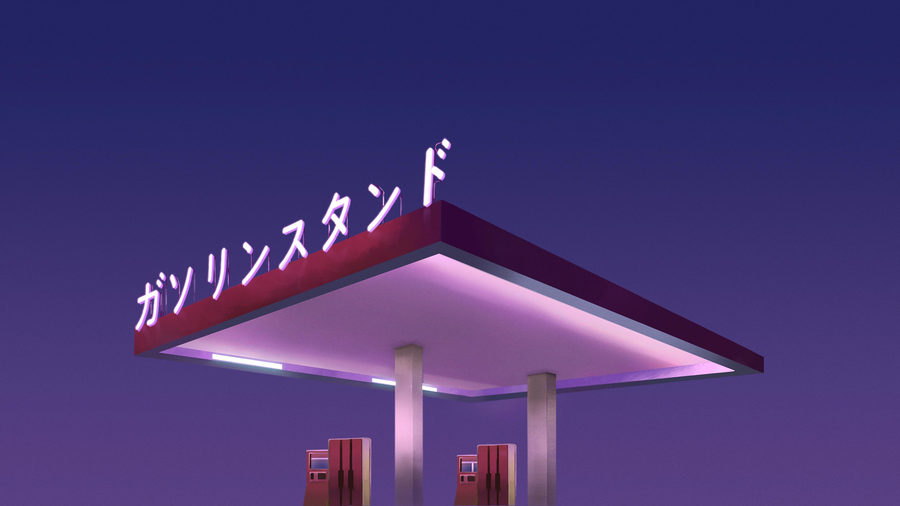
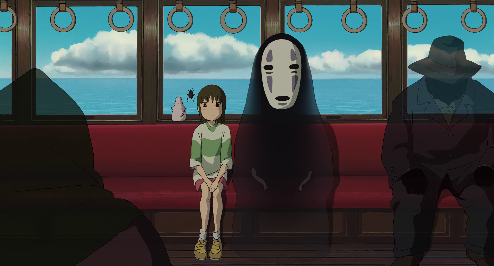
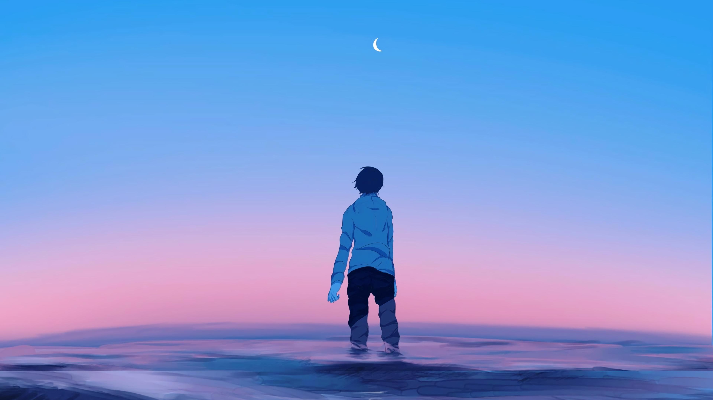
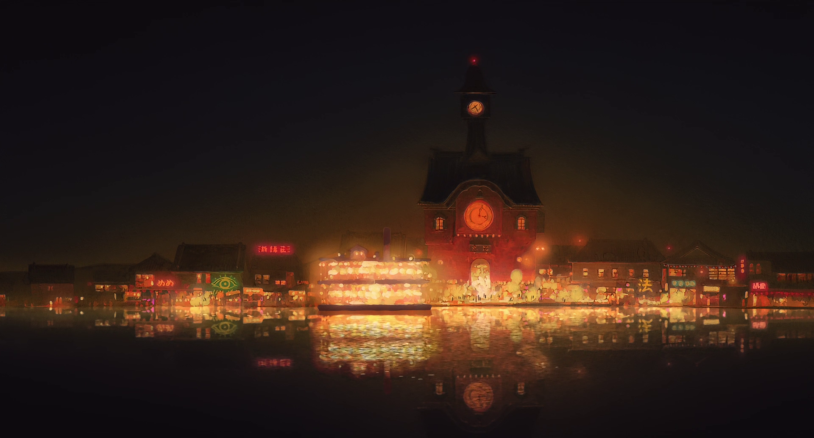
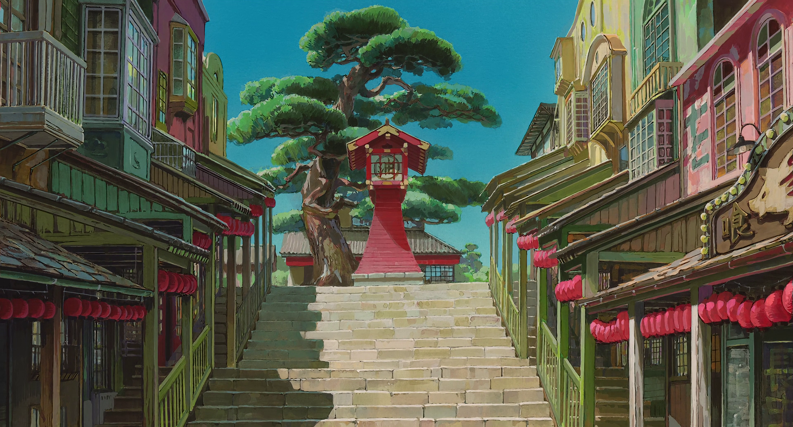
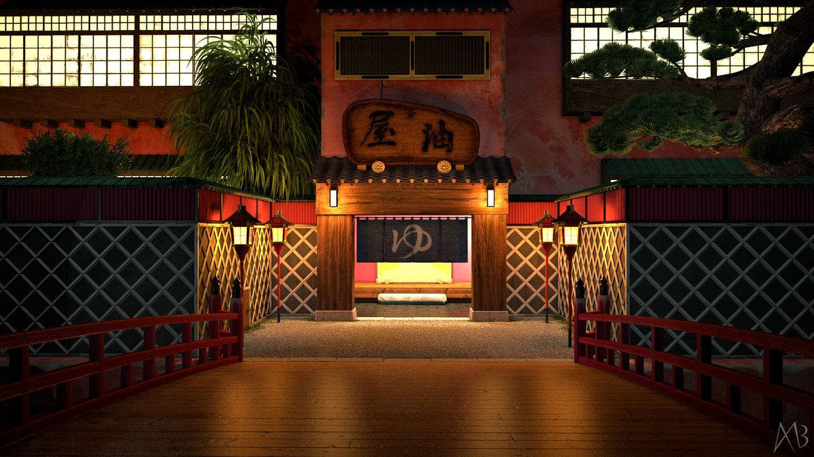

Teste de galery e links. Clique para ser redirecionado

Posto de gasolina japones no final da tarde

Chihiro e seus amigos no trem indo para a casa da Zeniba

Garoto no mar olhando para o horizonte durante o anoitecer

Cenário de Viagem de Chihiro. Vista de longe da casa de banho da Yubaba

Cenário de Viagem de Chihiro. Vista da calçada principal do vilarejo

Vista de frente da entrada da casa de banho da Yubaba(arte com tematica realista)